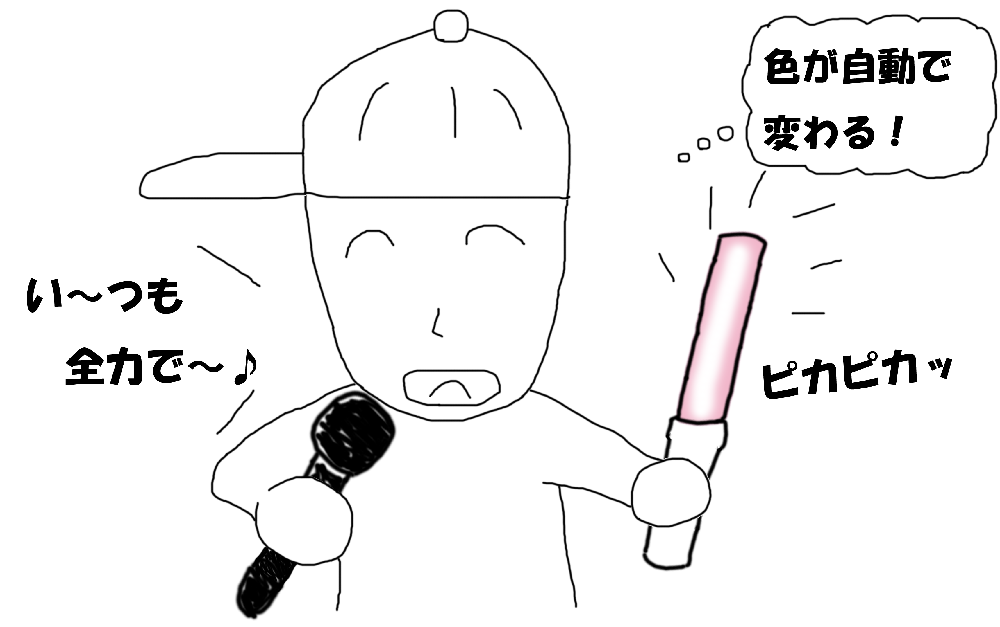
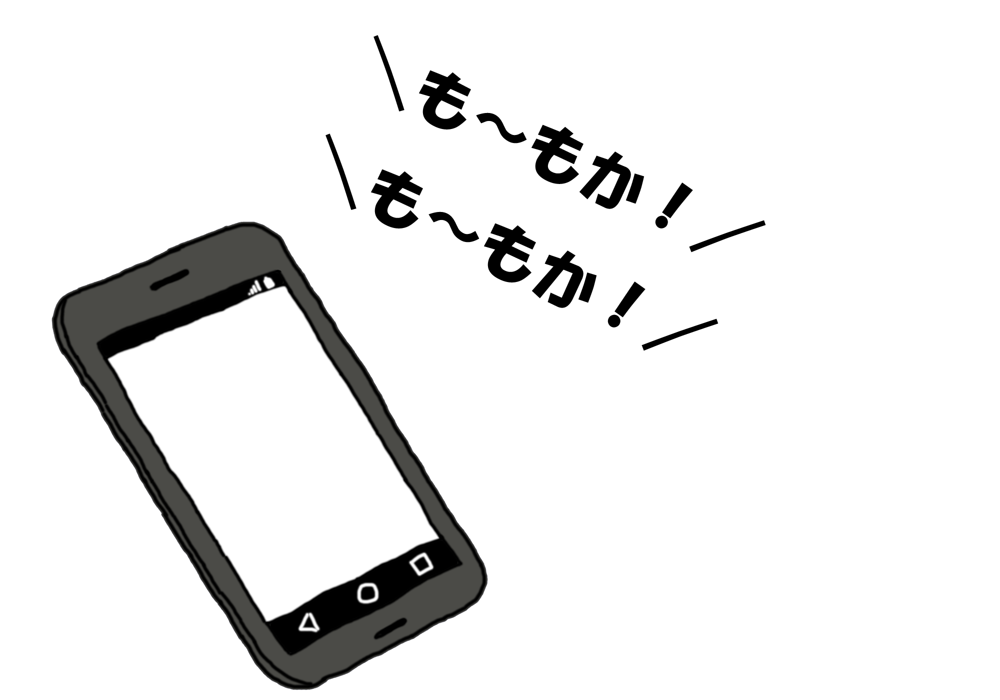

うりゃおいサイリウムには大きくわけて３つの機能があります。
その１ 自動で色が変わる
- 歌っているメンバーのイメージカラーに自動で変わる！
- 推し色を設定することができる！
- 全員で歌っているところや、誰も歌っていないところは推し色が光る。箱推しの場合は5色がランダムで光る！

その２ 自動でコールが流れる
- スマホからコールが流れてくる！
- ボタンを押している間だけ再生される！
- モノノフじゃなくても見よう見まねでコールができる！

その３ 複数端末でのセッションが可能
- 一緒にいる人のサイリウムのタイミングが同期できる！
- 色々なところからコールが聞こえてきてライブ感がでる！
- 喧嘩にならない（大事！）